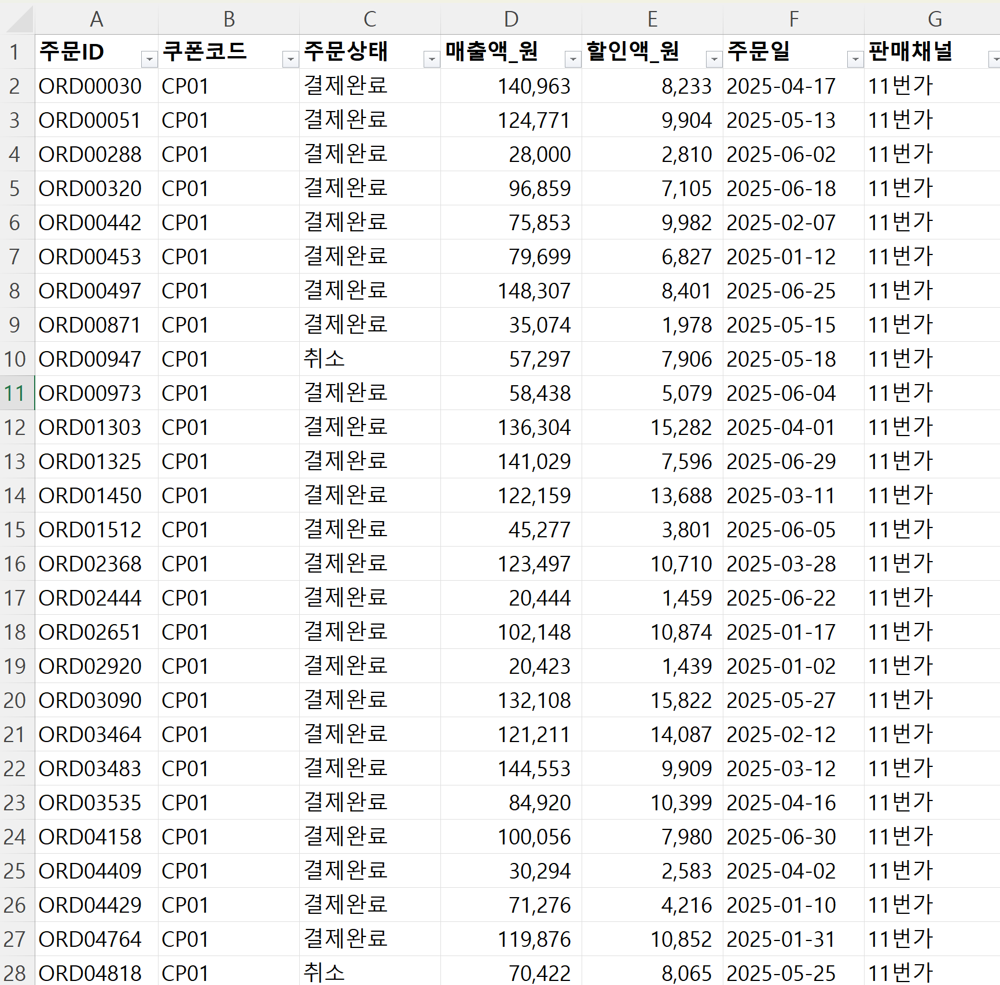

// 실습 3 · 쿠폰 성과 집계·인사이트
1 · 한 파일로 모으기¶
집계에 들어가기 전에 재료부터 만듭니다. 주문 기록이 채널 다섯 곳에 흩어져 있으니, 실습 1에서 한 것처럼 엑셀 한 파일로 모으는 게 첫 일입니다. 다만 이번에는 지킬 것이 둘 있습니다. 각 줄이 어느 채널에서 왔는지 태그를 남기고(없으면 4단계 채널 비교가 막힙니다), 취소 건도 지금은 그대로 둡니다.
거르고 요약하는 건 다음 단계의 일이고, 모으는 단계에서는 원본을 보존합니다.
직접 시켜보세요¶
아래 두 체크리스트를 먼저 읽고 빠진 규칙이 없도록 프롬프트에 담아보세요.
프롬프트에 꼭 담을 것 ✅¶
- 읽을 대상 — 채널 5곳 원본
1~5.주문기록_*전부 - 출처 표시 — 각 줄에
판매채널기록 - 원본 보존 — 취소 건도 빼지 말고 그대로 (필터는 집계에서)
- 결과 파일 — 하나의 엑셀 파일, 파일명 지정 (예:
주문종합.xlsx)
이런 건 빼세요 ❌¶
-
판매채널태그 없이 그냥 이어붙이기 (4단계 채널 비교가 막힙니다) - 채널별 합계·요약 내기
예시 프롬프트¶
여러분 문장을 먼저 보낸 뒤에 열어보세요.
이렇게 시킬 수 있습니다
이 폴더의 주문기록 파일 다섯 개(11번가·네이버·이마트·G마켓·쿠팡)를 하나로 모아줘.
각 줄에 어느 채널에서 왔는지 판매채널 칸을 새로 만들어 적어줘.
취소된 주문도 빼지 말고 그대로 담아 (거르는 건 다음 단계에서 할 거야).
결과는 주문종합.xlsx 한 파일로 저장해줘.
다 되면 채널별 건수와 전체 합계 줄 수를 알려줘.
실행 예시¶
이렇게 나오면 됩니다

체크포인트¶
- 통합 파일이 9,389행이다 (채널 5곳 건수 합)
-
판매채널칸에 5개 채널이 모두 있다